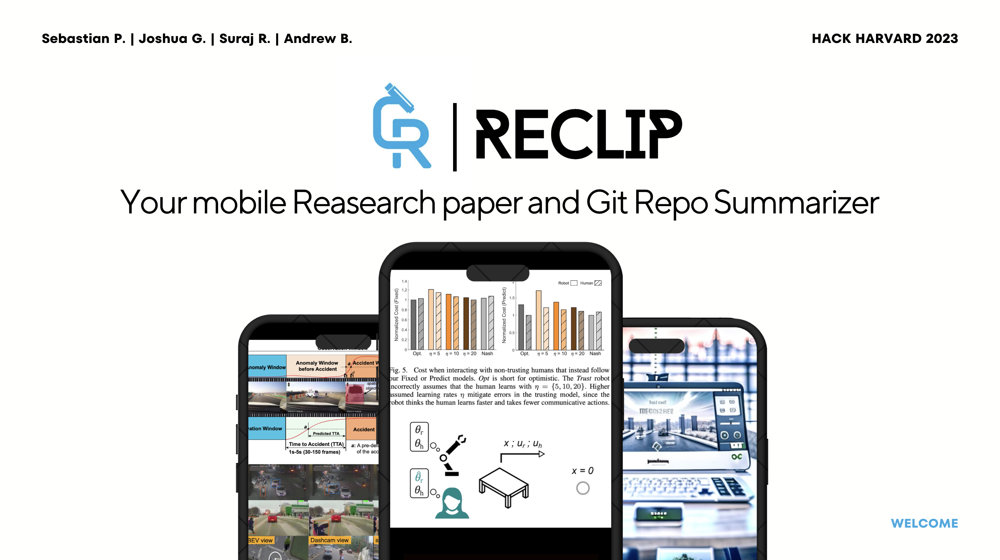
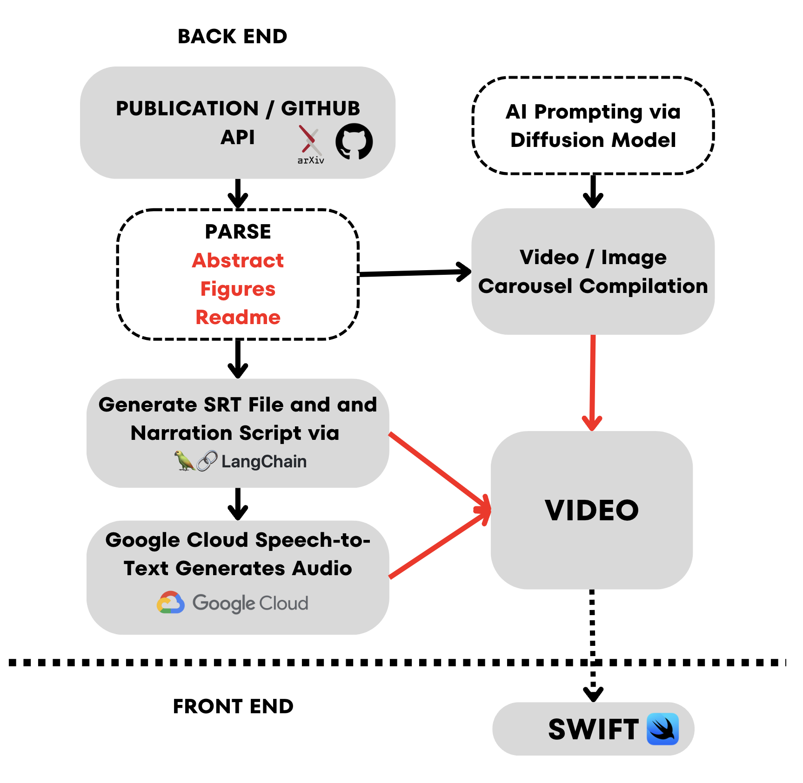

Re-Clip is a mobile application that revolutionizes the way we engage with research papers and GitHub repositories. By leveraging cutting-edge technologies like LangChang, MoviePy, Flask, Diffusion (an AI art generator), and Swift, Re-Clip is designed to summarize and generate captivating video content from research papers and GitHub repos, making them more accessible and engaging to users. In essence, it's like a social media platform specifically tailored for the world of research papers and git repos.
| Our System | iOS App |
|---|---|
|  | |
Re-Clip utilizes advanced natural language processing techniques provided by LangChang to extract key insights and summarize research papers and GitHub repositories. This feature ensures that users can quickly grasp the essence of the content.
With the help of MoviePy, Re-Clip transforms the summarized content into short, visually engaging videos or reels. This not only simplifies the understanding of complex concepts but also enhances the overall viewing experience.
Re-Clip combines technical elements of research papers and GitHub repositories with a sleek and intuitive user interface. The application's design is geared towards providing a seamless and enjoyable experience for users, encouraging them to explore more.
Re-Clip takes it a step further by incorporating AI-generated art using Diffusion. This feature adds a unique and visually stimulating dimension to the content, making the experience even more captivating.
The Re-Clip mobile app is built using Swift, ensuring a smooth and responsive user experience on iOS devices. The app is designed to make it easy for users to access and interact with research papers and GitHub repositories.
We built the app in two parts: an iOS mobile app and a backend ML pipeline in Python. The former offers the highly addictive infinite scroller interface with our videos and the latter takes long-form content—research papers and GitHub repos—and creates short videos.
text-davinci-003
OpenAI model to carry out the summarization. The summary was in the form
of a .srt file, the specification for subtitles.
Re-Clip is licensed under the MIT License. See the LICENSE file for more details.
Happy exploring! 🚀